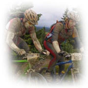
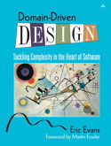

## About

I'm pasionate about many things: my family, my spare time and hobbies, travelling, good coffee , beer and wine, and last
but not least programming and software development. I'm currently working for Statoil ASA as a senior developer /
software architect. This has brought me to some interesting challenges and some wonderful new learning opportunities
over the years. My spare time I spend with my family or pursuing my hobbies and interests.



I also have some time for sports, mainly bicycling in the summer and skiing in the winter. This year's goal is
[Skienern](http://enern.com/portfolio/ "Skienern") at Oppdal in late february and
[Birkebeinerrittet](http://www.birkebeiner.no/en/MainMenu/Events/Cycle/Birkebeinerrittet/ "Birkebeinerrittet") from
Rena to Lillehammer in late August.

### Software development

As I've already mentioned, I'm very passionate about software development. In addition to being my profession, it is one
of my hobbies. I spend a lot of time trying to keep my skills fresh.
I'm a big believer in Agile Software Development, and have been since we had the fortune of having Eric Evans and
his team with us to teach us about <a href="http://www.domaindrivendesign.org">Domain Driven Design</a>.

Since then I've studied many of the agile methods, in particular XP and Scrum, but also Lean Software development and
Crystal. It is especially the core practices of XP that fascinates me, being a developer at heart. I've particularly come
to love Test-Driven Development, even though it was hard to do at first.

I'm also trying to program as much as I can on my spare time.

I always have a project or two going on at home. At work it is strictly Java, so I try to do other stuff at home, like
Ruby and it's excellent web framework RubyOnRails. If you haven't tried Ruby, you should! It is absolutely fabulous!
The main reason is that the language stays out of your way and lets you express your ideas cleanly without a lot of code
just to satisfy the compiler, or in Rails case the framework. Beautiful! The Reading Backlog app is a simple thing I
cooked up in Rails, which was really just a couple of hours work.


